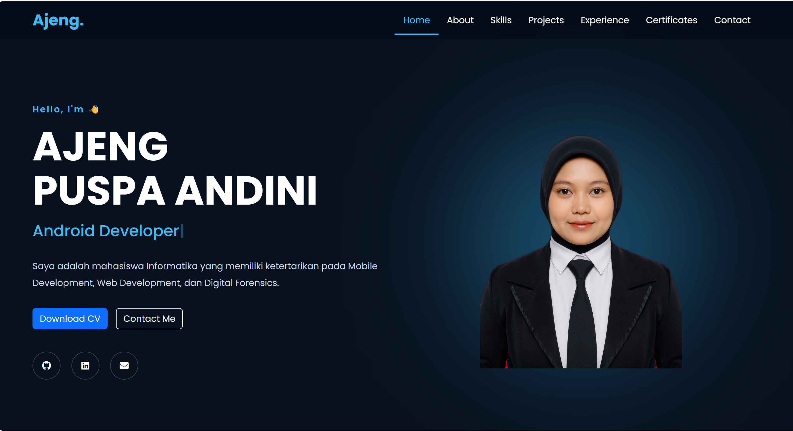
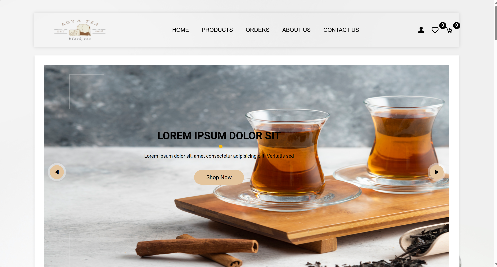
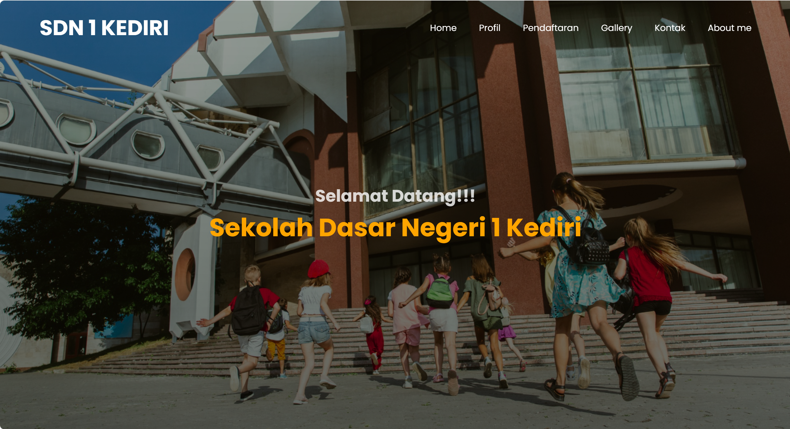
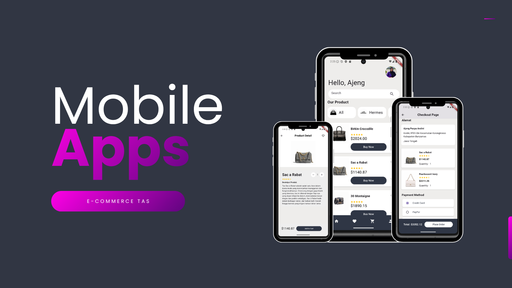
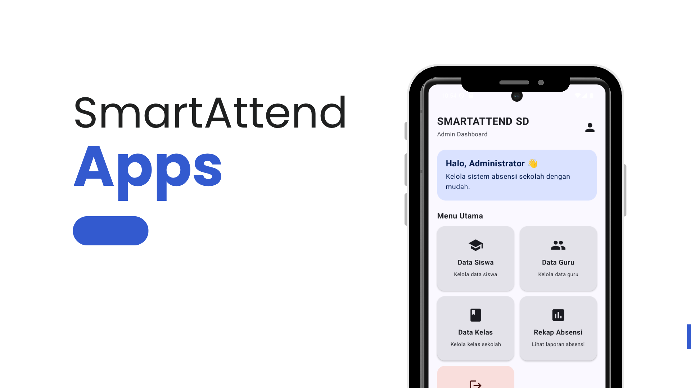

Things I've Built
Berikut beberapa project yang pernah saya kerjakan selama proses belajar dan pengembangan skill di bidang Mobile Development, Web Development, dan Digital Forensics.

Personal Portfolio Website
Website portfolio pribadi yang dibuat untuk menampilkan profil, skills, pengalaman, sertifikat, dan berbagai project yang telah saya kerjakan.

RuteKita Travel
Website pemesanan travel yang menyediakan pengelolaan rute, kendaraan, jadwal, ketersediaan kursi, pemesanan, hingga e-ticket dan laporan.

DDoS Analysis & Security Monitoring
Project penelitian Digital Forensics untuk menganalisis serangan Distributed Denial of Service (DDoS) menggunakan Honeypot T-Pot dan ELK Stack.

Selena App
Aplikasi Android yang dikembangkan untuk membantu UMKM dalam menganalisis keuangan, cash flow, dan mendapatkan insight dari data transaksi.

TeaShop Website
Website toko online bertema minuman teh yang dibuat sebagai project pengembangan web dengan fokus pada tampilan interface dan pengalaman pengguna.

School Website
Website sekolah yang dibuat untuk menyediakan informasi mengenai profil sekolah, program pendidikan, fasilitas, berita, kegiatan, serta informasi akademik kepada siswa, orang tua, dan masyarakat.

Bag E-Commerce Mobile App
Aplikasi mobile e-commerce yang dirancang untuk memudahkan pengguna dalam melihat katalog tas, mencari produk, melihat detail produk, menambahkan produk ke keranjang, dan melakukan proses pembelian.

SmartAttend SD
Aplikasi absensi siswa sekolah dasar berbasis Android dengan fitur face recognition untuk membantu proses pencatatan kehadiran siswa.